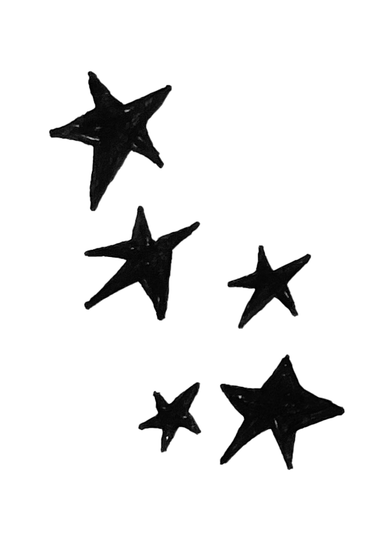
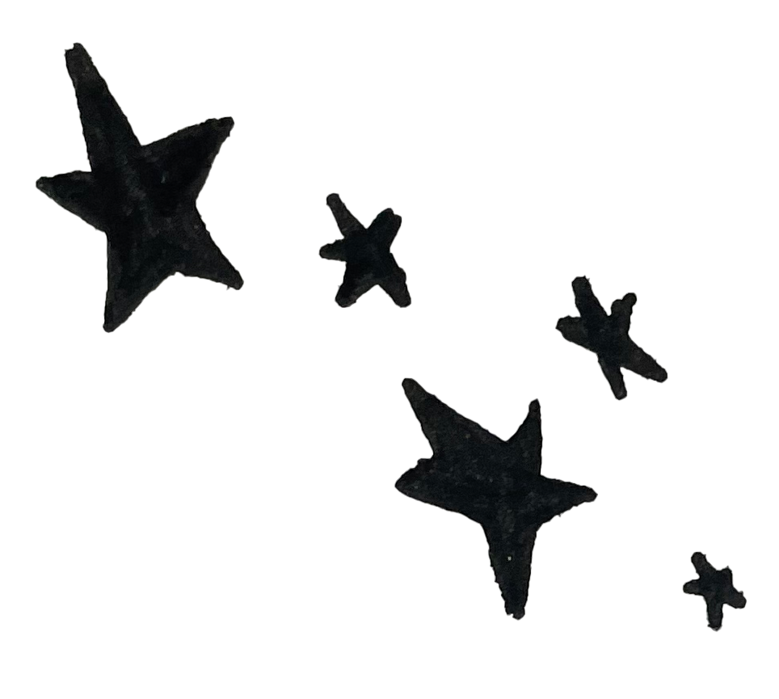

meine liebste
dies ist mein abschiedsbrief an dich
auch wenn ich ihn vermutlich niemals abschicken werde
es tut weh das zu schreiben
du bist ein wirbelsturm in meinem kopf
aber vor der realität zu fliehen tut noch mehr weh zumindest mir
auch diese erkenntnis tut mir weh
ich hab dich so geliebt
ich liebe dich immer noch
mit dir konnte ich träumen
wir hatten so viel spaß miteinander und ich konnte einfach ich sein
mit dir
aber jetzt hast du mich allein gelassen
in dieser welt, die sich einfach dreht und dreht und dreht
was soll ich nur tun
schließlich kann ich sie nicht aufhalten
aber veränderung ist schwer
die erde hat ihre drehrichutng geändert
die blauen krallen der nacht
haben sich an mir festgebissen
was soll ich mit zuckerwatte, wenn niemand sie mit mir isst
sie verdeckt nur die sonne
dann scheint sie nicht mehr
tut sie ja sowieso nicht
diese seltsame verschiebung hat schon seit langer zeit
begonnen
irgendwann ist einfach alles dunkel geworden
vermutlich haben wir uns beide einfach zu sehr auseinander entwickelt
ist ja gar nicht deine schuld
bitte können wir den kontakt beenden
warum erzählst du mir nichts mehr
ich dachte wir hätten keine geheimnisse
ich dachte du lässt mich nicht im stich
aber jetzt ist es geschehen
ich kann dir wohl kaum einen vorwurf machen
seit ich dich nicht mehr habe, habe ich Flugangst
der gedanke an die dröhnende maschine macht mich wahnsinnig
ich kann den boden unter den füßen nicht verlieren
aber er rutscht weg
ich kann den boden unter den füßen nicht verlieren
dafür dreht sich die erde zu schnell
ich glaube wir sollten mal reden
mögen wir uns
oder verbringen wir einfach nur zeit miteinander
die tage sind so lang und gehen doch so schnell vorüber
ich habe solche angst dass du weg bist
weil jemand besseres kommt
so als ersatzteil lebt es sich nicht so lang
ersatzteile sind austauschbar
oft kann man sie billiger als das original ersteigern
ich gebe auch ungern mehr geld als nötig dafür aus
eigentlich kaufe ich gar keine ersatzteile
man baut sie ja doch nie ein
und dann verstauben sie in einer ecke
und staubwischen tue ich auch nie
ich vermisse dich, dabei habe ich gar keinen grund dazu
du wohnst ja nur um die ecke
ich kann schon fast in dein fenster schauen von meinem balkon aus
auf dem stehen immer noch die bruchstücke des sommers
in meinen lungen verbrennt der sauerstoff
dann habe ich angst zu ersticken
deswegen muss das fenster immer offen bleiben
du hättest mir ja mal antworten können
oft schlafe ich nicht ein
vielleicht füllt sich mein körper mit staub
trocken und schmutzig
dann kann ich ersticken
auch mit offenem fenster
du bist ein wirbelsturm in meiner brust
jedes staubkorn pustest du umher
ich versuche dich aufzuhalten
aber das geht nicht
viel zu schnell bist du
wir können es nicht wegputzen
das ist mir auch einfach viel zu laut
so ein verdammtes getöse
ich kann gar nicht mehr hören was die anderen sagen
es ist so laut dass ich meine gedanken nicht höre
immerhin bist du in mir drin
und kannst nicht weg
ich habe dich eingefangen
gefangen genommen
sind meine rippen die gitterstäbe
wie gerne ich dich festhalte
aber ich denke du solltest jetzt gehen
aber du kommst nicht raus
ich habe den schlüssel verloren
und jetzt?
ich weiß doch auch nicht.
warum hast du mir immer noch nicht geantwortet
wenn ich weiß du bist bei jemand anderem bin ich eifersüchtig
das will ich nicht
eigentlich will ich einfach nur nach hause
oder zu dir
besser wäre nach hause
aber ich muss bei dir bleiben